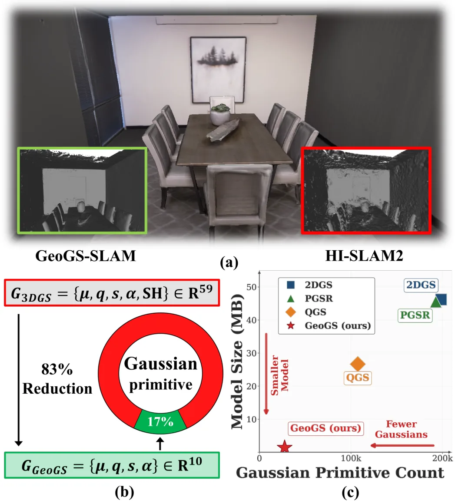
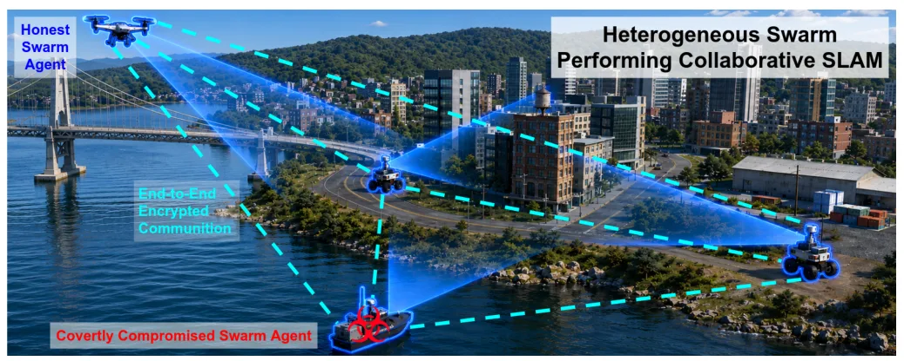
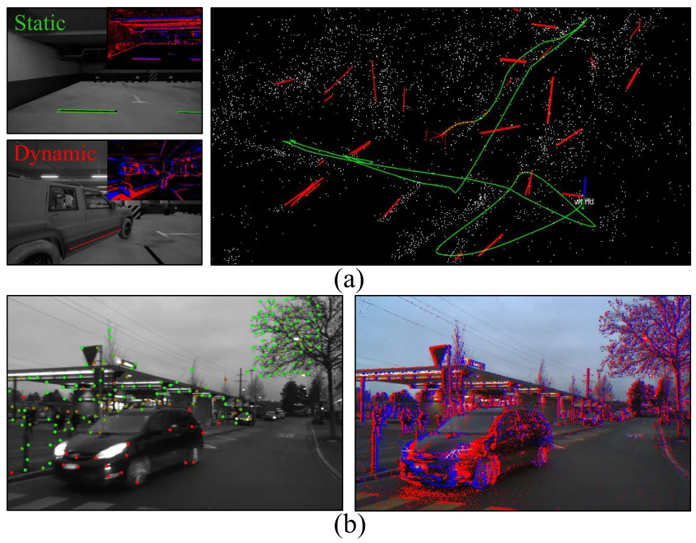
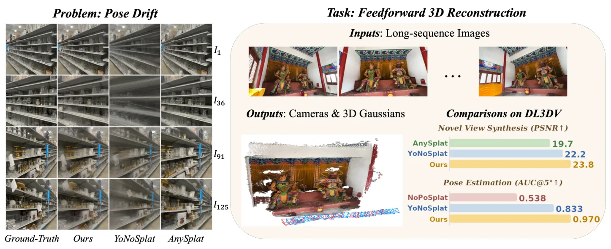
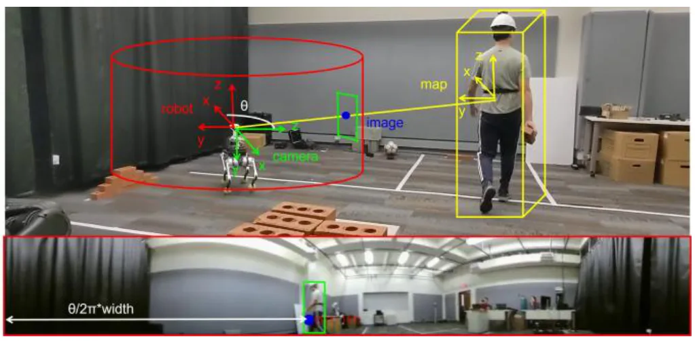
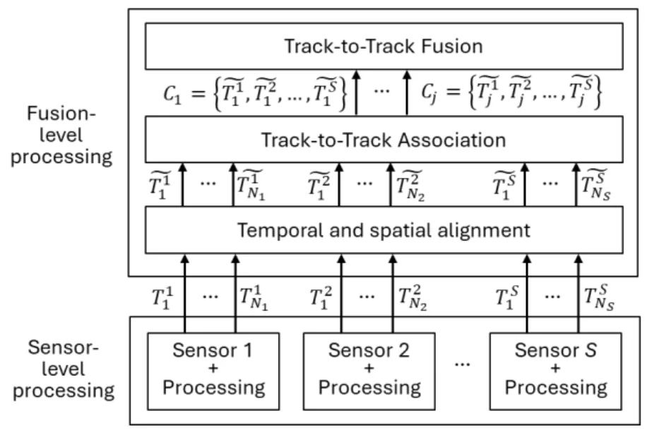

新论文 · 日期 2026-07-08 · score 17 · cs.RO
作者：Lipu Zhou, Yaoyun Kang, Junxiang Pang, Shengkai Sun
评分 9.5/10
3DGS-SLAM稠密单目 SLAM几何建图回环更新在线重建
一句话工作总结：把 3DGS-SLAM 的核心从外观渲染压缩到几何建图，并专门处理回环后的 Gaussian 地图一致性。
本文提出 Geometry-only Gaussian Splatting（GeoGS），将 3DGS 从同时建模外观与几何转向只保留空间几何参数，单个 primitive 参数量减少超过 80%。基于 GeoGS，作者构建了稠密单目 SLAM 系统，通过单视图/多视图几何与光度监督、局部平面驱动初始化来加速几何收敛，并在回环后对 Gaussian 地图做全局变换更新，以避免不同视角独立位姿修正造成的地图撕裂。实验…
Dense visual SLAM is a fundamental problem in robotics. Recent advances in 3DGS have demonstrated its potential for dense SLAM. Existing 3DGS frameworks focus on both appearance and geometry modeling. However,…

新论文 · 日期 2026-07-08 · score 16 · cs.RO
作者：Andrew Fishberg, Yixuan Jia, Jonathan P. How
评分 8.7/10
协同 SLAM多机器人回环检测安全多方计算隐私保护
一句话工作总结：把 SMPC 引入协同 SLAM 回环候选检测，在不公开全局描述子的情况下比较相似度。
CILC 关注多智能体/协同 SLAM 中全局描述子广播带来的隐私泄露问题。作者展示被攻陷的群体成员可从诚实机器人公开广播的 global descriptors 中近似重建图像和轨迹，并提出使用安全多方计算（SMPC）只保护 inter-agent loop closure 候选检测中的描述子相似度比较。该设计不试图加密整个 CSLAM pipeline，而是保护最敏感且计算量较轻的环节，并在仿真和硬件实验中验证…
Multi-agent Simultaneous Localization and Mapping (SLAM) and collaborative SLAM (CSLAM) require robots to continuously exchange global descriptors (GDs) to detect inter-agent loop closures (ILCs). While encryp…

新论文 · 日期 2026-07-08 · score 15 · cs.RO
作者：Seunghun Lee, Jihun Nam, Dong-Uk Seo, Hyun Myung
评分 8.5/10
事件相机VINS动态环境点线特征鲁棒 BA
一句话工作总结：用时间统计和几何 BA 残差联合评估事件点线特征可靠性，提升动态环境下 VINS 稳定性。
PLED-VINS 是一个单目事件相机视觉惯性 SLAM 框架，面向动态环境中移动物体和快速运动导致的状态估计退化。方法为点和线事件特征构建 entropy-recency score map 以刻画时间可靠性，同时通过统一的点线鲁棒 bundle adjustment 估计几何可靠性，再用自适应加权策略融合时间与几何可靠性，并对线特征加入运动条件可靠性建模，以降低不可靠观测对状态估计的影响。
Dynamic environments remain a fundamental challenge for visual SLAM, where unreliable observations from moving objects and rapid motion degrade state estimation accuracy. Although event cameras preserve fine-g…

新论文 · 日期 2026-07-08 · score 14 · cs.CV
作者：Xiangyu Sun, Liu Liu, Seungkwon Yang, Jingbing Han
评分 8.2/10
无位姿重建3DGSpose driftraymap长序列
一句话工作总结：通过 raymap 几何锚定和双频视角调度，缓解无位姿前馈 3DGS 的长序列 pose drift。
NoDrift3R 针对无位姿前馈 3DGS/三维重建在长图像序列中因相机位姿估计漂移导致重建质量下降的问题，提出 Raymap-Guided Coupling Module（RGC）。该模块将 Gaussian 中心锚定到 raymap 诱导的几何上，并在统一目标中联合优化 RGB 重建、raymap 一致性和 camera regularization，使几何和外观形成双向反馈。作者还提出 Dual-Frequ…
Pose-Free Feed-forward 3D Gaussian Splatting (3DGS) has recently emerged as a powerful paradigm for fast scene reconstruction. However, its performance degrades significantly in long image sequences due to cum…

新论文 · 日期 2026-07-08 · score 9 · cs.RO
作者：Yuer Gao, Tongqing Xu, Qingyang Liu, Yi Cai
评分 7.5/10
水下机器人主动重建运动规划感知约束控制三维重建
一句话工作总结：把推进器扰动纳入运动规划目标，通过过驱动冗余提升水下三维重建质量。
该工作研究水下机器人推进器扰动如何影响视觉重建质量，并利用过驱动 ROV 的推力分配冗余来降低目标区域尾流和沉积物扰动。在八推进器平台上，作者建立基于 actuator-disk theory 的控制导向尾流 proxy，并在满足运动约束的同时搜索推力 null space。实验显示目标区域粒子速度降低 67%，三维重建 RMSE 从 4.3±1.8 mm 降到 1.9±0.4 mm，重建成功率达到 98.5%。
Underwater robots often operate near delicate targets where high-power thrusters resuspend sediments and induce turbulence, degrading image quality at the sensor input. Conventional controllers optimize vehicl…

新论文 · 日期 2026-07-08 · score 5 · cs.RO, cs.CV
作者：Yilong Chen, Huili Huang, Yong K. Cho
评分 6.8/10
LiDAR-camera 融合动态目标跟踪施工机器人Kalman filter语义辅助
一句话工作总结：用 LiDAR 运动检测和鱼眼图像语义检测互补，提高施工场景动态障碍物跟踪鲁棒性。
该论文面向施工现场中的机器人动态目标检测与跟踪，提出将 LiDAR 点云/占据栅格的运动检测与上视鱼眼相机的语义检测融合。系统先在配准点云中识别运动物体，再把三维坐标投影到二维圆柱全景图，与实时图像检测结果对齐，并作为 Kalman filter 的观测更新。方法强调简单、实时和对动态/静态状态切换的鲁棒性，适用于四足机器人施工场景部署。
Robust dynamic object detection and tracking are essential for enabling robots to operate safely and effectively alongside humans in complex environments such as construction sites. While LiDAR-based SLAM and…

新论文 · 日期 2026-07-08 · score 3 · cs.NI, cs.RO
作者：Amir Mohammadisarab, Miguel Sepulcre, Luca Lusvarghi, Javier Gozalvez
评分 6.2/10
GNSS 误差V2X协同感知自动驾驶误差传播
一句话工作总结：评估 GNSS 误差和 V2X 丢包如何影响协同感知融合，并指出 ghost vehicle 风险。
本文分析网联自动驾驶车辆中车载传感器与 V2X 数据融合对协同感知的影响，重点考察传感测量误差、V2X packet loss 和 GNSS inaccuracies 对融合质量的作用。结果显示协同感知可扩大感知范围并提升感知水平，但 V2X 数据中的误差也可能在融合过程中生成 ghost vehicles，因此需要专门机制避免 V2X 数据引入额外错误。
Automated vehicles rely on onboard sensors to perceive their surroundings and navigate autonomously. However, sensor performance may degrade under adverse weather conditions or when line-of-sight is obstructed…

新论文 · 日期 2026-07-08 · score 3 · cs.RO
作者：Shujie Zhang, Jingkun Yi, Weipeng Zhong, Zirui Zhou
评分 6/10
real-to-sim机器人学习3DGS仿真场景DROID-Sim
一句话工作总结：从单张真实图像生成可交互仿真场景，用 3DGS 保留背景视觉层以服务机器人学习。
RoboSnap 是一个 real-to-sim 框架，目标是从单张 RGB 图像生成可交互仿真场景，用于通用机器人学习和可复现实验评测。方法采用分层设计：前景交互区域通过 collision-aware asset refinement 保证物理稳定，背景则用 3D Gaussian Splatting visual layer 保持新视角下的视觉真实感。作者还基于 DROID 构建了包含 564 个真实场景的…
Recovering real-world scenes as interactive simulation environments can enable generalizable robot learning and reproducible policy evaluation. However, constructing scenes that are both physically stable and…